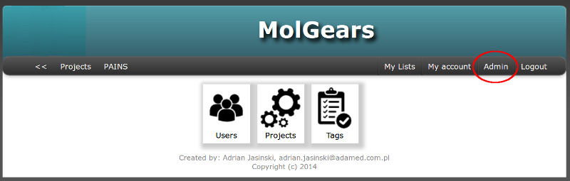
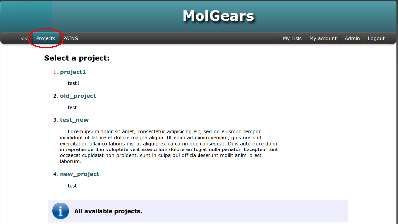
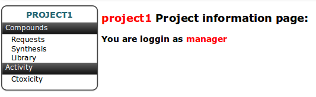
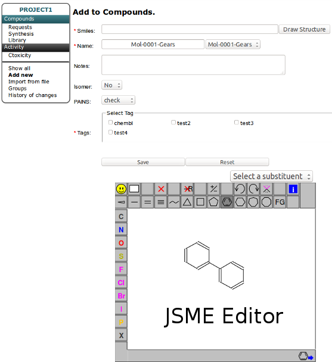
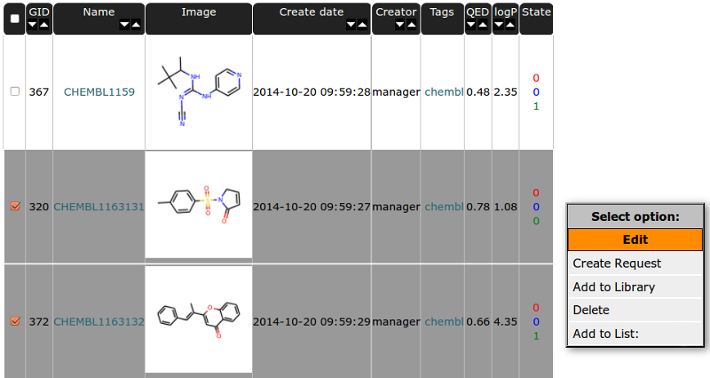
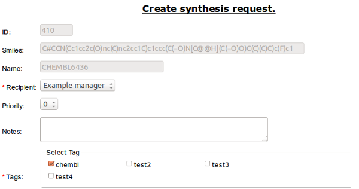
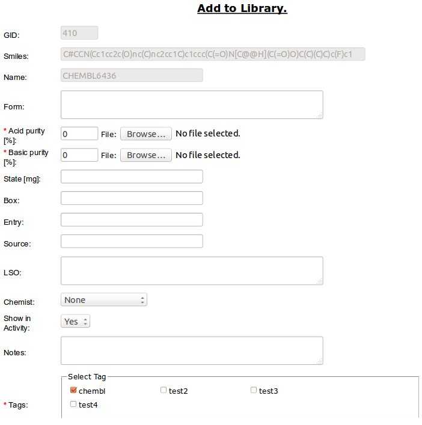

This document is intended to provide an overview of web interface functionality.
For bugs fix and/or suggestions for improvements, please contact me: adrian.jasinski@adamed.com.pl
See first Installation for running web interface.
To enter Admin Panel you should have admin privileges (managers group).
Click Admin on top right side of the page (in horizontal menu).
From this panel you can create and manage: Users, Projects and Tags.
Admin Panel screenshot is presented below:

In project table you have listed all created projects. In actions column you can edit (by clicking pencil) or delete a project (delete button).
You can create New Project by clicking Green Plus button on the top of the table. The Name of the Project and at least one Cell Line are required.
After Creating new project the Group named as The Project with privileges to access the Project is added to database and is available in Users Table. An user to access the Project should be add to Group named as The project.
You should create at least one project to start working with database!
In users table you can create/manage users accounts. In actions column you can edit (by clicking pencil) or delete a user (delete button).
You can create New User by clicking Green Plus button on the top of the table. You should set a password for a user and select Basic Groups and Projects Group.
Managers group is for admin privileges, Users group is for basic access and Principals group is for receiving the compounds and notifications. If you want add a user access to any of the projects add it to Group named as the project (Select it from Projects Permissions).
In tags table you can manage/created tags. In actions column you can edit (by clicking pencil) or delete a user (delete button).
You can create New Tag by clicking Green Plus button on the top of the table. You can add one or more tags at once.
The default view for user after logging in is a list of available projects. It’s also available from the top horizontal menu. User has permission to view and to access to the project after assigning it to a group named as the project. Lets select one of the projects:

The default view of project is presented below. On the left side of page is placed menu for tables corresponding to the Project basic workflow

The Basic functionality of this table is to store structure information for each unique compound. Other tables have connection to structure by relationship to compounds. See: Database model.
Interface of other tables is very similar so we will use this table as an example and describe it in more detail. Interface is composed of two parts. Left vertical menu and table with sortable columns containing information and image of compound.
Left vertical menu is divided into parts by horizontal lines.
- The first part is the same as in the Project View except that it has been market the current table with the number of elements in brackets.
- The second part is for an actions performed on the table.
The default is to show all elements.
Add new is a form for adding new compound to database. SMILES, Name and Tags (see: Admin Panel for tags creation) are required.
SMILES code should be placed in the appropriate field manually or can be drawn using the JSME editor , which will run when you press the “Draw Structure” button.
Naming can be autonumerated (see more below in Groups) by selecting next number from selection form near the Name field.
Option Isomer is setting flag “Isomer” on Compound and it’s allowing to add the same structure to database once more. By default Isomer is set to “No” and only unique structures are allowed.
Option PAINS is set for filtering “frequent hitter” compounds and for setting a flag near a compound matched the filters.
Import from file option if for reading one or more compounds from file. Allowed file formats are sdf, mol, and smi (text file containing in each row SMILES code and the name of the compound separated by a space - remember to remove empty lines).

Groups - is for autonaming of compounds. It’s allow to create group of names autonumerated from database. The number is placed between prefix and sufix field with defined precision.

To create New Group click green plus button (Add new) and fill the form:

- Next part is containing navigation bar for switching the page. The same navigation bar is on the bottom of the table.
- Checking the checkbox “Download manager” will show div with downloading options on the top of the table.
- You can choose the compounds for download
- total - all compounds from the table,
- selected - select compound by checking the checkbox near chosen molecules in the table - it will change the row color,
- or choose a range from ... to ...
- Select the file format (PDF, MS Excel, SDF, CSV - data separated by comma, TXT - data separated by space)
- Choose Information, Attributes or Data to download. In Data Column you can choose the image size in pixels.

- Choose one of filtering option by checking the appropriate box in Filter section.
- For all options at once choose blank checkbox. Filter options will show on the top of the table.
- Options for structure filtering are: Similarity, Substructure, Exact Structure.
- For filtering the similarity is shown an additional column containing the percentage value of the similarity.
- For text fields (e.g. Name, Creator, Notes) you can use wildcard character asterisk (*) in your search criteria.
- Clicking the image of compound in the table will run similarity search with the chosen structure as the search criterion.
- Clicking the tag name from Tags column in the table will search all compound containing the chosen tag.

Some columns in Table header heve arrows for sorting in increasing/decreasing order. The firtst column is for checking all compound from current page. GID - is Global ID - unique number for indexing compounds and it is connected to the compound structure.
Select/unselect compounds independently by checking the checkbox near chosen molecule in the table - it will change the row color.
You can use the the right mouse button to display a menu of tasks or options for selected compounds:

Edit - is for editing compound data. You can change the structure (it will change the structure for all related instances in requests, synthesis, library and results tables). Since multiple names are allowed for one compound you can add more names to compound here and set the chosen one as a primary.
Create request - is connected to Project basic workflow. It allow to add compound to Requests Table [ref].
Required is selection of the Recipient. This person will be set as a the one to receive email notification about finish of synthesis.
You can also set the priority of the synthesis (0-5).

Required is percentage value for one of the purity types (acid or basic in range from 0 to 100). You can optionally attach file with analytical report (e.g. HPLC/MS).
State is float value for amount (in micrograms) of compound.

The Details of Compound can be viewed after clicking “Name” field in table (in this example CHEMBL6380).
The upper part of the page is the same for all tables and it is divided into two columns:
- The right side shows a compound image (click image to filter compounds by similarity).
- The left indicates the name and GID number in the first row. Than the following information about the descriptors by default colored black. The values are colored red if they exceed Lipinski rule of five. Toggle show/hide button is for Formula, InChI and SMILES data. The last information are Tags assigned for the compound.
The second part is separated from the first by horizontal menu with actions buttons (actions are the same as in right mouse button menu).
This view is different in each table. You can switch between tables by using bookmarks. This place is also good for checking if compound is added to other tables. If not it’s bookmark is blocked and font is colored by gray.
Details section has all information about instance from the current table.
Similar Compounds section is only for details in Compound table. Mouse Hover on Similarity value will show molecule image. Clicking on the name will redirect to the details page of selected molecule. You can
History of changes section will show all changes and actions recorded for molecule. Data are sorted by date.

This table is a waiting list for compounds to be accepted to synthesis. Each instance in table can have one of three statuses:
proposed
This is the default status for molecule in request table after being created. By default only “proposed” molecules are shown in Request Table. To view all instances choose option “show all” in left vertical menu bar. Rows in table for this status are colored in yellow.
accepted
This status is set for molecules accepted to synthesis. See below how to accept a structure to synthesis. Rows in table for this status are colored in cyan.
reject
Rows in table for this status are colored in magenta.
To accept selected molecules to synthesis choose option “Accept” from right mouse botton menu bar.
Required is expected number of synthesis phases/etaps (it can be edited) and Recipient - person who will get notyfication about completion of synthesis and will accept the synthesized compound to library.
Note
User to be selected as Recipient should belong to the “principals” group. See: Admin Panel for editing user groups.
Accepted compound is added to Synthesis table [ref].
Warning
Compound will be assigned to the user who accepted it.
For this reason it should be accepted by the person who will be synthesize it.
The Details of Requests can be viewed like in Compounds Table - after clicking “Name” field for chosen molecules in table. Frame around of the compound image is colored in accordance to status type.
If the compound was added to the request more than once, you can switch between them by selecting the next number in the tabs (in this case, 403-1, 403-2 where 403 is a GID number). Current has frame in aqua color.
This table is created to store information related to the synthesis process and for tracking synthesis etaps and current status. Priority value is synhronized with request table and can be changed. The phases column present information about current phase vs expected number of phases. By default, only accepted by the user compounds are shown. To switch view to “all” choose option “Show all” from left vertical menu.
Each instance in table can have one of statuses:
pending
This is the default status for molecule in synthesis table after being accepted from requests. Rows in table for this status are colored in yellow. For this Status the -1 Phase is set.
synthesis
Status set for the compounds in the process of synthesis. Phases for this status are numbered from 0 to max number declared during acceptance from requests. Rows in table for this status are colored in cyan.
finished
Status set for the compounds after process of synthesis is finished (current phase number is the same as max number). Analytical data should be added to molecule. Rows in table for this status are colored in cyan.
received
Status set for the compounds after being recived by Recipient. As a result compound is added to Library table. Rows in table for this status are colored in green.
rejected
Status set for the compounds if we decided to not continue synthesis any more. When the molecule is rejected this status is set also for request with it originates. Rows in table for this status are colored in magenta.
discontinued
Status set for the compounds if we temporary decided to not continue synthesis. Previous status can be restored by choosing “continue” option from RMB menu. Rows in table for this status are colored in violet.